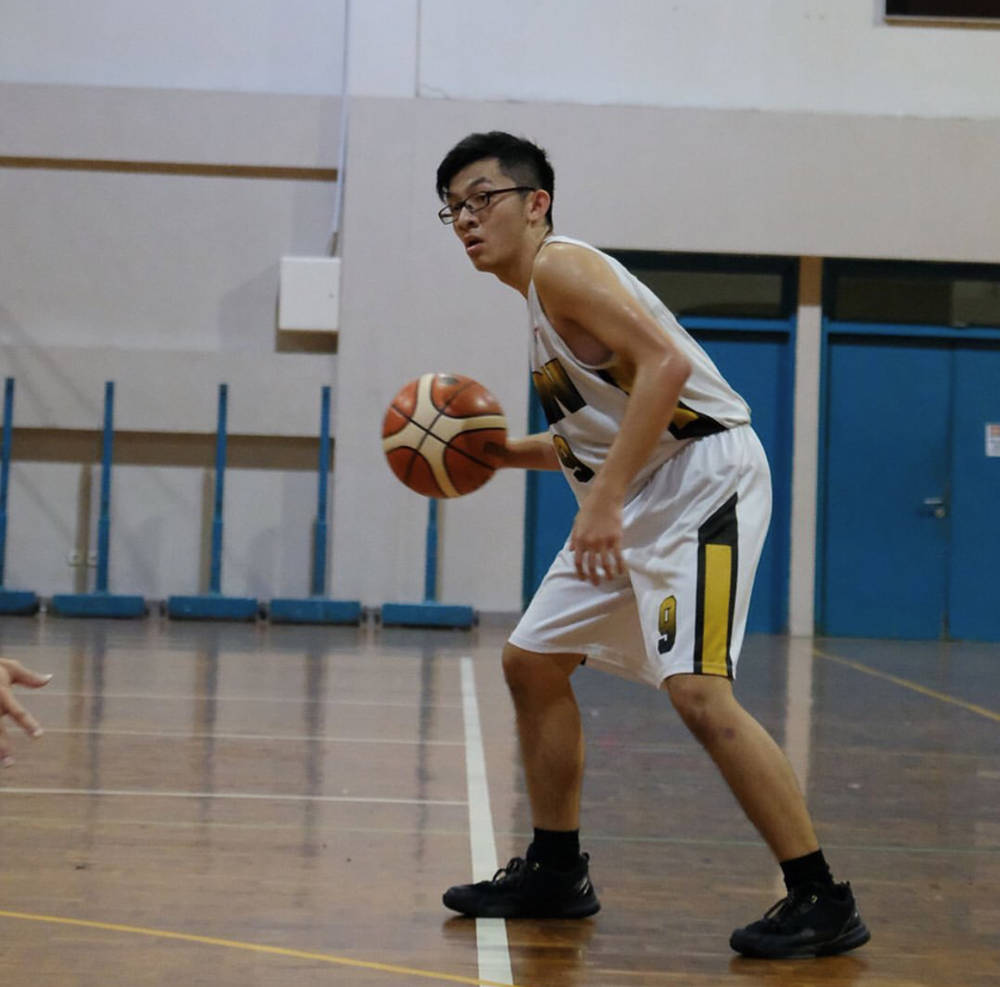
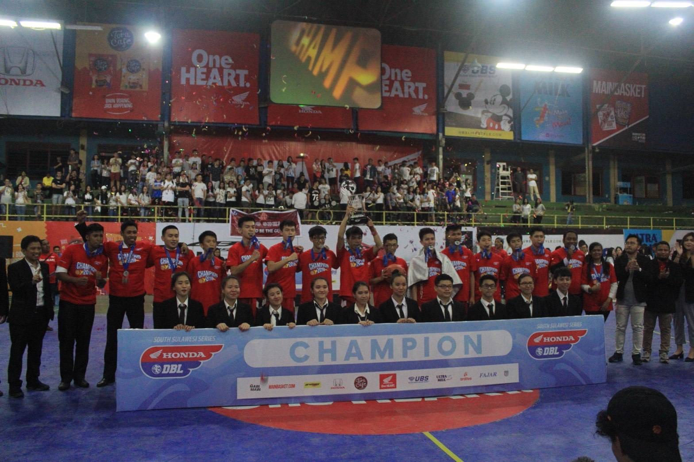
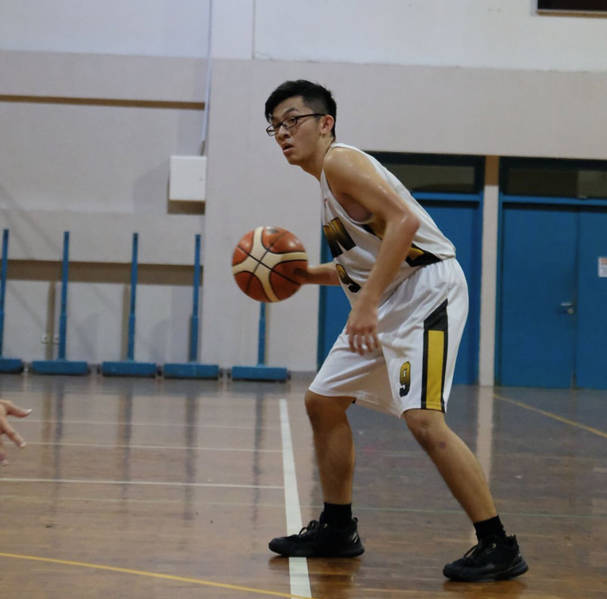
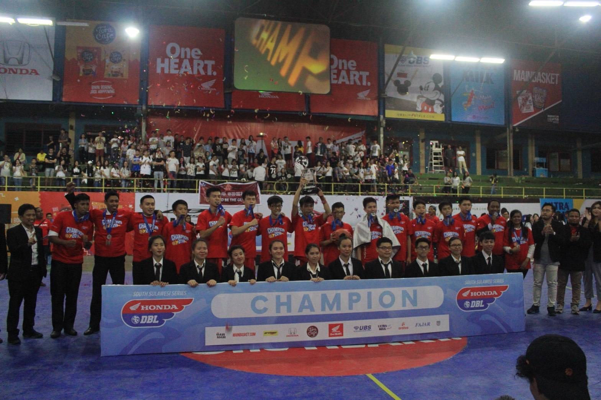

For me, basketball is not just a sport. It's a lifestyle. I've learned so much things from basketball.
Me and my team used to have 3 principles on basketball. HARDWORK, STAY FOCUS, and PLAY FOR GOD. We
implies those principles not only on the court, but on our daily activities. Basketball also taught me
how to work as a team, willing to sacrifice to prioritize everybody's needs before yours. Basketball
changes me into a better person.
What is basketball
I know most of you know what basketball is. But, for some of you who doesn't what basketball
is... Basketball is a sport where 2 teams contains 5 starting lineups and 6 reserves competing
against the other team to get the ball inside the bucket. Short history about basketball,
basketball was invented in 1891 in Springfield College by Dr. James Naismith. He invented this
sport to keep the condition of young athletes during winter. To play a basketball, you don't
need a big field like football or soccer. You only need a small court, a ball, and a hoop where
you can shoot the ball at. Soon after being invented, Basketball got so popular and become one
of the most popular sport in the world.
How I start playing basketball
I see basketball the first time when I was in junior high school. Before I start playing
basketball, soccer is my most favorite sport. I didn't like basketball that much because I was
one of the shortest guy in my class. Playing basketball against bigger and taller person is
really hard for me. After I reached senior high school, I learn so much things about basketball
from my new coach. I found my inspiration from a short basketball player named Rajon Rondo. Even
though I admire LeBron James more, Rondo's game open my eyes that basketball is for everyone,
not only for the tall and big, but also for the short and skinny.
Why I love playing basketball
Basketball is a multiplayer cooperation sport. In a game of basketball, we have competition, but
also we have cooperation. So, only having good basketball skill never guarantees you 100%
winning. You will always have to build chemistry with all your teammates in order to work it out
together. From that experience, I met a lot of people and a lot of new friends. Shortly, I got
addicted to basketball game. Whenever i'm feeling good, I always want to play basketball. Even
though i'm on my worst mood, I always have a mindset that playing basketball will help me
relieve my stress.
What I don't like from basketball
Maybe basketball is my favorite thing to do. But that doesn't mean like everything about it.
Basketball is a physical game. By playing basketball, you are risking your body while improving
your body condition. You'll never know when will injury hits you so bad. I fell on a basketball
competition one time. I twisted my right ankle so bad that I couldn't walk by myself. I went to
school using a wheelchair. As a basketball player, went to school using wheelchair is just like
showing your weakness to everyone. So I decided to push myself so I can walk again. My doctor
said I would't be able to walk for about 3 months, but after forcing myself, I finally can walk
again after only a month.
Impact by playing basketball
I'm an introvert. Playing basketball with many teammates in front of many.. many... people is
really hard at the first time. But my experience changed me. Now, i'm not afraid to stand in
front of people to show them what I got. Making the crowd cheers is always be the thing I wanna
do. Basketball also taught me how to be nice to another one, respect your enemy, giving out the
best for the people who always hold your back. Especially, being a starting lineup for my team
at Honda Development Basketball League, makes almost all of my schoolmates know me. Since then,
it becomes easier for me to get some new friends at my school.
 


